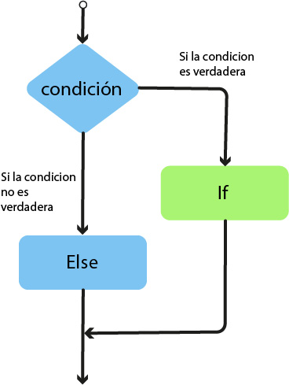

Eventos
El HTML DOM permite ejecutar el código cuando ocurre un evento.
El navegador genera eventos cuando "suceden cosas" a elementos HTML como:
- Al hacer click con el mouse - onclik
- Al doble click con el mouse - ondblclick
- Al colocar el mouse sobre un elemento - onmouseover
- Al alejar el mouse de un elemento - onmouseout
- Cuando una página web ha cargado - Onload
- Al persionas una teccla - onkeydown
- Al hacer scroll en la página - onscroll
Onmouseover
En el ejemplo se usan eventos "onmouseover" y "onmouseout" sobre un elemento div para modificar su estilo de CSS
EventListener
El metodo addEventListener() adjunta controlador de eventos al elemento especificado.
La sintaxis para este método es la siguiente:
elemento.addEventListener(evento, funcion)
El metodo removerEventListener() se puede usar para eliminar un controlador de enventos que se haya adjuntado con el método add EbentListener()
El método document.addEventListener() se usa para adjuntar un controlador de evnetos al documento HTML
addEventListener:
Se usa addEventListener para ejecutar una funciín sobre div cuando el uduario hace mousover sobre otro div
Rem ove EventListener()
Se usa para eliminar un controlador de enventos que se ha adjuntado con el método addEventListener
Para eliminar controladores de eventos, la función especificada con el método addEventListener debe ser un función externa.
El elemento fildset tiene un evento onmouseove que mues
Operadores lógicos
Declaración condicional
Una declaración condicional se usa para determinar el flujo del programa basado en un condición
Cuando se escribe código, se realizan diferentes acciones para diferentes decisiones. Para hacer esto se pueden usar sentencias condiciones en el código
En JS se tienen las siguientes declaraciones:
- if: Que es para especificar un bloque de código para ejecutatse, su una condición especificada es verdadera
- else: Para especificar un bloque de código para que se ejecute, si la misam condicion es falsa
Ejemplos:
if(condición){
código que será ejecutado si la condición es verdadera
}
else{
código que se ejecuta cuando la condicion es falsa
}
Otras condiciones:
else if: Permite evaluar multiples condiciones secuencialmente. ESto es útil cuando se tienen más de dos posibles situaciones que manejar en el código
if(condición){
código que será ejecutado si la condición es verdadera
}
Si es falsa se pasa a la sigiente condición
else if{
si es verdadera, se ejecuta su bloque de código y se termina evaluando
Si es falsa, se pasa a la siguiente condición
}
else Este bloque se ejecuta si ninguna de la condiciones anterioeres fue cerdadera.Es opcional para util para manejar casos no previstos.